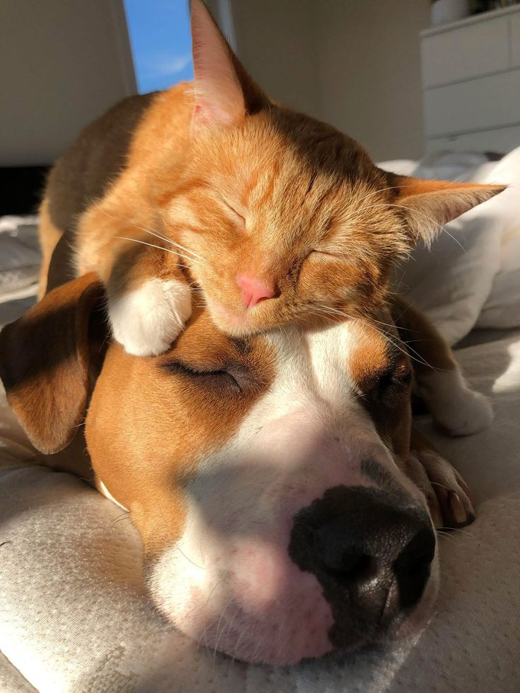

Refugio Huellas de Amor 🐾
Trabajamos cada día para rescatar, cuidar y encontrar un hogar para más animales.
Dirección
Calle 10 #123, Barrio San José,
Ciudad de Ejemplo
Contactos
+57 300 123 4567
contacto@huellasdeamor.org
Información general
Somos un refugio sin ánimo de lucro que brinda protección, atención veterinaria y mucho amor a perros y gatos rescatados. Nuestro objetivo es encontrarles familias responsables y permanentes.